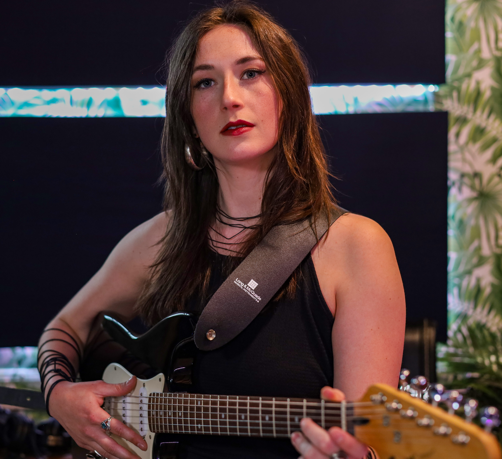
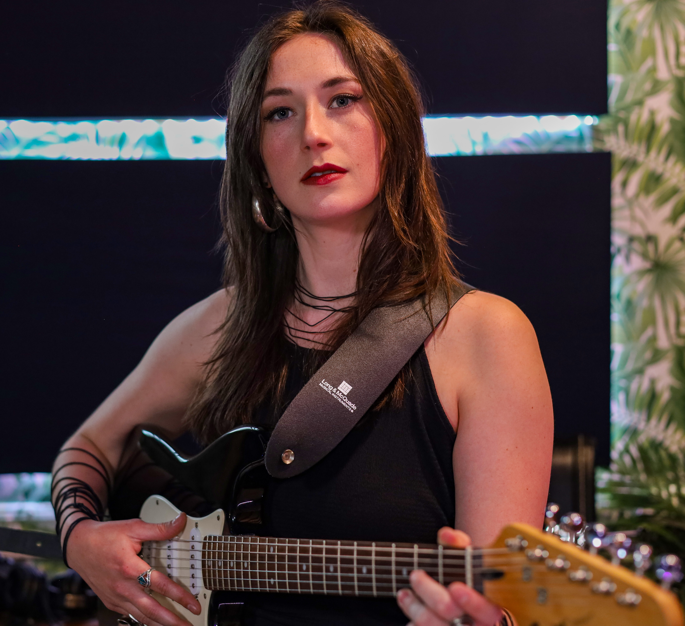

About Lauren Odds
We’re a queer pop-rock-punk band based in Victoria, B.C., made up of Lauren (lead vocals & rhythm guitar), Ariel (drums), Hannah (lead guitar), and Miri (bass).
Our music comes from the messiness of non-conformity in a world that loves its boxes neat. Rooted in our lived experiences, our songs explore identity, vulnerability, and the pressure to fit in—and what it means to push back. From beauty standards to heartbreak, we’re here to make noise about it.
We make music to feel seen, and to help others feel seen too. Whether you’re dancing, crying, or both at once — you belong here.